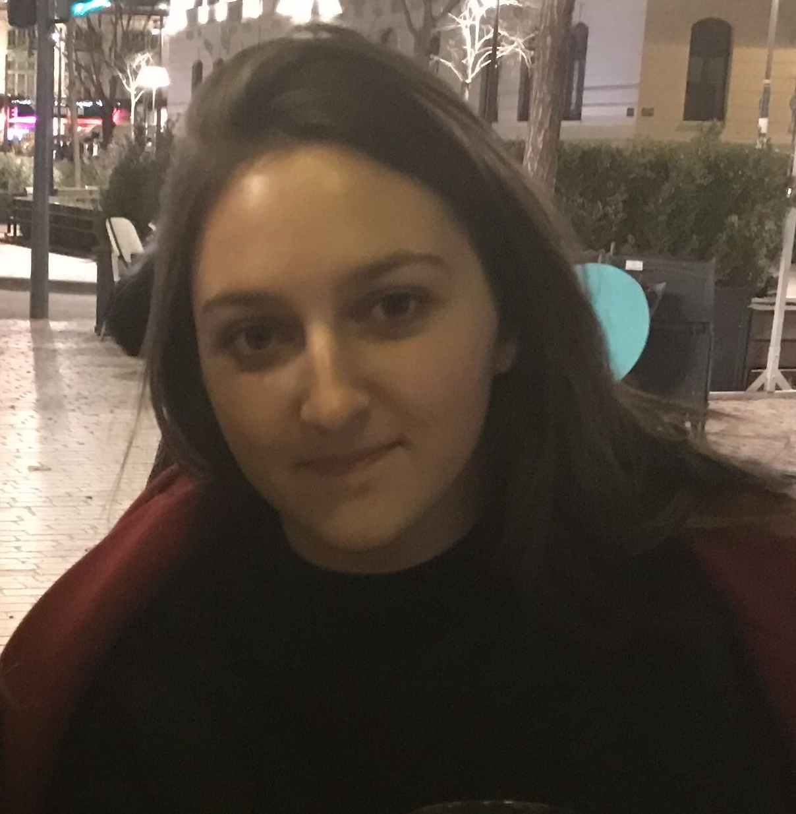

About
Welcome to my website!
I am a fourth year PhD Student at Paris School of Economics, under the supervision of Éric Maurin.
My research interests lie at the intersection between Family Economics, Economics of Education and Labor Economics.
Currently, I am a visiting FAIR - Center for Empirical Labor Economics at NHH, sponsored by Aline Bütikofer.
You can find my CV here.
